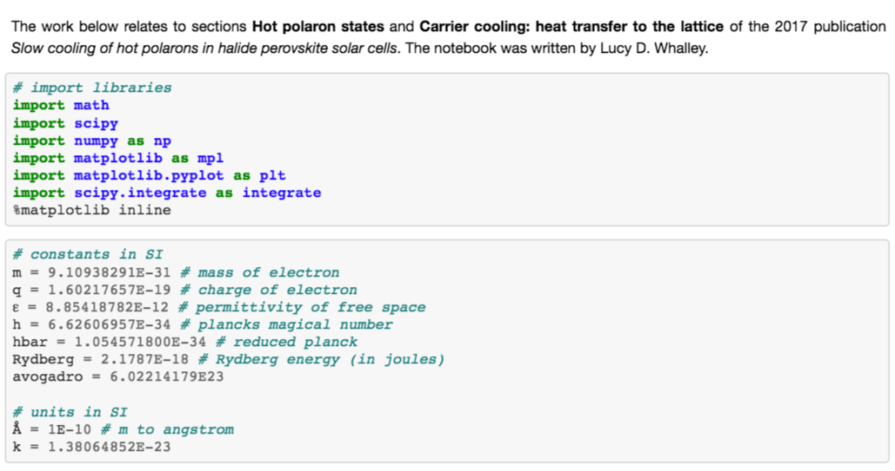
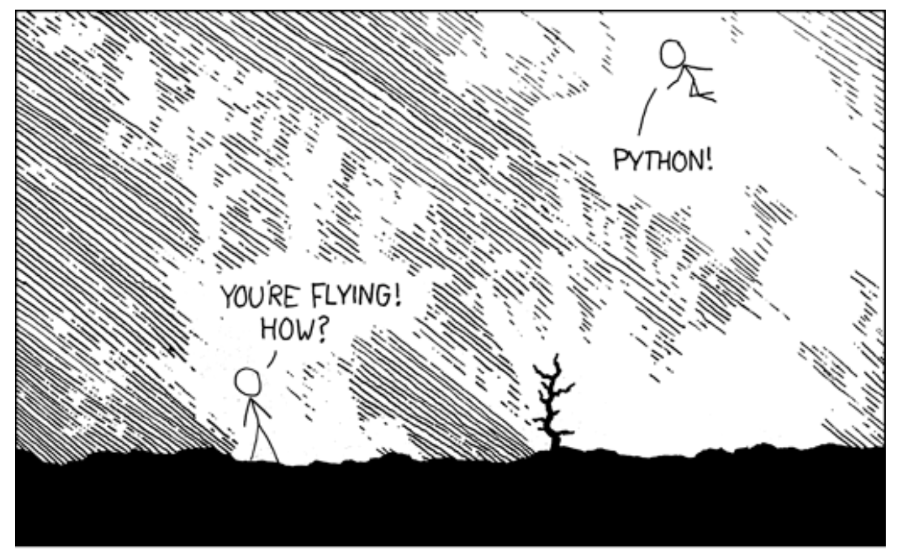
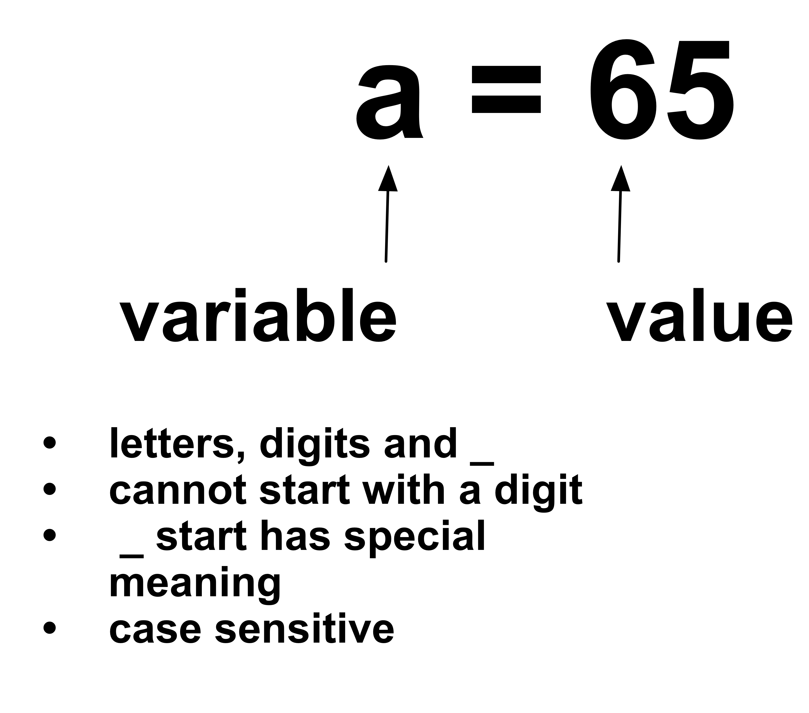
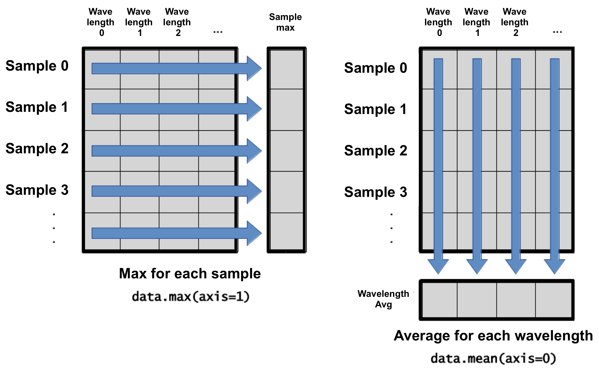

<!DOCTYPE html>
<html lang="en">
  <head>
    <meta charset="utf-8" />
    <meta name="viewport" content="width=device-width, initial-scale=1.0, maximum-scale=1.0, user-scalable=no" />

    <title>Slides Template</title>
    <link rel="stylesheet" href="./css/reveal.css" />
    <link rel="stylesheet" href="./css/theme/white.css" id="theme" />
    <link rel="stylesheet" href="./css/highlight/zenburn.css" />
    <link rel="stylesheet" href="./css/print/paper.css" type="text/css" media="print" />

  </head>
  <body>
    <div class="reveal">
      <div class="slides"><section  data-markdown><script type="text/template">

## Welcome

### Programming with Python

</br>

Lucy Whalley / l.whalley@northumbria.ac.uk. 
[lucydot.github.io/slides](https://lucydot.github.io/slides)
[lucydot.github.io/python_novice](https://lucydot.github.io/python_novice)

</script></section><section  data-markdown><script type="text/template">

### Hi! I'm Lucy

- University of Birmingham: MSci Theoretical Physics
- Birmingham City University: PGCE Mathematics
- Imperial College London: PhD in Materials Science (with the CDT-PV)
- Imperial College London: Research Associate in Solar Cells
- University of Northumbria: Vice-Chancellor's Fellow

</script></section><section  data-markdown><script type="text/template">

### Hi! I'm Lucy

- University of Birmingham: C++ / Python
- Birmingham City University: HTML / static websites
- Imperial College London: High-performance computing / Software Carpentry / Fellow @ Software Sustainability Institute 
- University of Northumbria: ???

</script></section><section  data-markdown><script type="text/template">

### Workshop outline

- Day One: Python basics (variables, data types, for loops, conditionals, functions)
- Day Two: Data analysis and plotting

...but why is this important?

</script></section><section  data-markdown><script type="text/template">


</script></section><section  data-markdown><script type="text/template">

### Why Programming? Reproducibility

> Reproducibility is a major principle of the scientific method. It means that a result obtained by an experiment or observational study should be achieved again with a high degree of agreement when the study is replicated with the same methodology by different researchers.

</script></section><section  data-markdown><script type="text/template">

### Why Programming? Reproducibility



<small>
research paper: [Slow Cooling of Hot Polarons in Halide Perovskite Solar Cells](https://doi.org/10.1021/acsenergylett.7b00862) </br>
analysis code: [github.com/WMD-group/hot-carrier-cooling](https://github.com/WMD-group/hot-carrier-cooling/)
</small>

</script></section><section  data-markdown><script type="text/template">

### Why Programming? Reproducibility

  

<small>
research paper: [Impact of nonparabolic electronic band structure on the optical and transport properties of photovoltaic materials](https://doi.org/10.1103/PhysRevB.99.085207)   
software paper: [effmass: An effective mass package](https://joss.theoj.org/papers/10.21105/joss.00797)
</small>

</script></section><section  data-markdown><script type="text/template">

### Why Programming? Repeatability


</script></section><section  data-markdown><script type="text/template">

### Why Programming? Repeatability


</script></section><section  data-markdown><script type="text/template">


### Why Python? The trade-off


</script></section><section  data-markdown><script type="text/template">

### Why Python? It gives you wings





</script></section><section  data-markdown><script type="text/template">

### Why Python? Publication-ready plots


<small>

[Computational Screening of All Stoichiometric Inorganic Materials](https://doi.org/10.1016/j.chempr.2016.09.010), D.W. Davies et al.
</small>


</script></section><section  data-markdown><script type="text/template">

### Why Python? Everything else...

- readable  
- free to use
- cross-platform
- well documented
- widely used

</script></section><section  data-markdown><script type="text/template">

### Today's outline


1. running python code  
2. variables   
3. data types  
4. functions, help and errors  
5. lists  
6. for loops  
7. if statements      
             


</script></section><section  data-markdown><script type="text/template">

### Plain text vs. Jupyter Notebook

- *Plain text approach:*
	- write code in a text editor
	- save with a `.py` extension
	- run code using a terminal

- *Jupyter notebook approach:*
	- write code in a `jupyter notebook`
	- run code in a `jupyter notebook`
	- save with a `.ipynb` extension

</script></section><section  data-markdown><script type="text/template">

#### Setup

- Open your Jupyter Notebook
- Arrange your screen so you can see my screen and your Jupyter Notebook at the same time
- At some points during the training you will also need to access:
	- etherpad: [https://etherpad.wikimedia.org/p/cdt-renu](https://etherpad.wikimedia.org/p/cdt-renu)
	- quiz: [http://etc.ch/qoHR](http://etc.ch/qoHR)
	- course website: [lucydot.github.io/python_novice](https://lucydot.github.io/python_novice)
	- course slides: [lucydot.github.io/slides](https://lucydot.github.io/slides)

</script></section><section  data-markdown><script type="text/template">

<div align="LEFT">

### Task (5 min)

Use your Jupyter notebook to...

* link to the CDT-ReNU webpage
* calculate 3624357/325
* make a bullet pointed ToDo list with heading "ToDo list"

 --> Thumbs up when you're done please

</script></section><section  data-markdown><script type="text/template">



</script></section><section  data-markdown><script type="text/template">

<div align="LEFT">

### Task (2 min)


Can you predict what the final value of `position` is for the code block below? --> Vote at [http://etc.ch/qoHR](http://etc.ch/qoHR).

```
initial = 'left'
position = initial
initial = 'right'
```


</script></section><section  data-markdown><script type="text/template">


<div align="LEFT">

### Task (2 min)

What do you think the following code will print? --> Vote at [http://etc.ch/qoHR](http://etc.ch/qoHR).

```
first = 1
second = 5*first
first=2
print('first is', first, 'and second is', second)
```

</script></section><section  data-markdown><script type="text/template">

### Data types


<div align="LEFT">

<small>

| Data type  | Python name   | Definition   | Example |
|----------|--------------|--------------|---------------|
|integer   |       int       |  positive or negative whole numbers            |       `-256`        |
|float  |            float  |   real number           |         `-3.16436`      |
|string  |           str   |        character string      |    `"20 pence." `          |
|list     |            list  |   a sequence of values          |     `['frog',2,8]`          |


\+ boolean, dict, tuple, complex, None, set

</small>

</script></section><section  data-markdown><script type="text/template">

<div align="LEFT">

### Task (2 min)

Which of the following will print 2.0? --> Vote at [http://etc.ch/qoHR](http://etc.ch/qoHR).


```
first = 1.0
second = "1"
third = "1.1"
```

<small>
1. `first + float(second)`
2. `float(second) + float(third)`
3. `first + int(third)`
4. `first + int(float(third))`
5. `int(first) + int(float(third))`
6. `2.0 * second`

</small>

</script></section><section  data-markdown><script type="text/template">

### Today's outline

<small>
1. **running python code:** Jupyter Notebooks, markdown basics  
2. **variables:** variable names, variable assignment, `print()`, execution order   
3. **data types:** integer, float, string, list, `len()`, string operations/indexing/slicing, type conversion: `int()`, `str()`, `float()` 
4. **functions, help and errors:** `min()`, `max()`, `round()`, `help()`, runtime errors (exceptions), syntax errors  
5. **lists**  
6. **for loops**  
7. **if statements**  

</small>
</script></section><section  data-markdown><script type="text/template">

### Lists

<small>

| Data type  | Python name   | Definition   | Example |
|----------|--------------|--------------|---------------|
|integer   |       int       |  positive or negative whole numbers            |       `-256`        |
|float  |            float  |   real number           |         `-3.16436`      |
|string  |           str   |        character string      |    `"20 pence." `          |
|list     |            list  |   a sequence of values          |     `['frog',2,8]`          |


</small>

</script></section><section  data-markdown><script type="text/template">

### For Loops


</script></section><section  data-markdown><script type="text/template">

### For Loops


</script></section><section  data-markdown><script type="text/template">

<div align="LEFT">

### Pairs Task (3 min)

I want to sum the integers from 1 to 10. What is wrong with this code? How can I fix it? --> Thumbs up when you are ready to share your answer.

```
total = 0
for number in range(10):
	total = total + number
print(total)
```

</script></section><section  data-markdown><script type="text/template">
### Conditionals

```
mass = 4.2

if mass > 3:
	print(mass, ' is large')

if mass < 2:
	print(mass, ' is small')

if 2 <= mass <= 3:  
	print(mass, ' is just right')
```

</script></section><section  data-markdown><script type="text/template">


<div align="LEFT">

### Pairs Task (3 min)

What is wrong with the code? Fix the code so that it works as intented -> Thumbs up when you are ready to share your answer.


```
grade = 95

if grade >= 70:
	print("grade is C")
elif grade >= 80:
	print("grade is B")
elif grade >= 90:
	print("grade is A")
```
</script></section><section  data-markdown><script type="text/template">

### Summary

<small>

1. **running python code:** Jupyter Notebooks, markdown basics  
2. **variables:** variable names, variable assignment, `print()`, execution order   
3. **data types:** integer, float, string, list, `len()`, string operations/indexing/slicing, type conversion: `int()`, `str()`, `float()` 
4. **functions, help and errors:** `min()`, `max()`, `round()`, `help()`, runtime errors (exceptions), syntax errors  
5. **lists:** sequence type, immutable vs mutable, list method append, del  
6. **for loops:** dummy variable, loop syntax, index from 0  
7. **if statements:** if, elif, else, ordering  

These slides available at: [lucydot.github.io/slides](https://lucydot.github.io/slides)  
Workshop materials are available at: [lucydot.github.io/python_novice](https://lucydot.github.io/python_novice)  
 
Back tomorrow at 9am for Part Two.

</small>

</script></section><section  data-markdown><script type="text/template">


## Welcome

### Programming with Python, Day Two

</br>

Lucy Whalley  / l.whalley@northumbria.ac.uk 
[lucydot.github.io/slides](https://lucydot.github.io/slides)
[lucydot.github.io/python_novice](https://lucydot.github.io/python_novice)


</script></section><section  data-markdown><script type="text/template">

### Today's outline


1. functions
2. variable scope  
3. libraries 
4. cleaning data with pandas 
5. analysing data with numpy
6. plotting data with matplotlib 
7. running code as a Python script
8. programming good practice     


</script></section><section  data-markdown><script type="text/template">

### Functions

```
def print_greeting():
	print ("Hello!")
```
</script></section><section  data-markdown><script type="text/template">

### Functions

```
def print_personalised_greeting(name):
	print ("Hello "+name)
```

</script></section><section  data-markdown><script type="text/template">


<div align="LEFT">

### Task (2 min)


Fill in the blanks to create a function that takes a list of numbers as an argument and returns the first negative value in the list --> Vote at [http://etc.ch/qoHR](http://etc.ch/qoHR)

```
def first_negative(values):
	for v in ____:
		if ____:
			return ____
```
</script></section><section  data-markdown><script type="text/template">

### Variable Scope

```
pressure = 103.9

def adjust(t):
    temperature = t*1.43/pressure
    return temperature
    
```
</script></section><section  data-markdown><script type="text/template">
### Python scientific libraries


</script></section><section  data-markdown><script type="text/template">


</script></section><section  data-markdown><script type="text/template">
<div align="LEFT">

### Pairs Task (15 min)

You want to select a random character from a string. ` "base = ATCHAGHRASG" `

1. which standard library module could help you?
2. which function could you select from that module? 
3. try to write a program that uses that function

Feel free to look online (search for "Python standard library") -> Thumbs up when you are ready to share your answer.

</script></section><section  data-markdown><script type="text/template">

### Today's outline

<small>

1. **functions**: function syntax, return statement, parameters and arguments
2. **variable scope**: local and global variables
3. **libraries**: modules, packages, libraries, import statements, aliases
4. **cleaning data with pandas**:
5. **analysing data with numpy**:
6. **plotting data with matplotlib**: 
7. **running code as a Python script**:
8. **programming good practice**:

</small>

</script></section><section  data-markdown><script type="text/template">

### Indexing arrays


</script></section><section  data-markdown><script type="text/template">

<div align="LEFT">

### Task (2 min)

Crack the code -> Message me on Teams with your answer

```
letters = np.array([[r,y,c,t],
					[u,o,x,e],
					[d,p,i,n]])

letters[0,2] letters[2,0] letters[0,3] - 
letters[0,0] letters[1,3] letters[3,3] letters[0,1]
```


</script></section><section  data-markdown><script type="text/template">

## Operations across axes




</script></section><section  data-markdown><script type="text/template">

### Putting it all together

[bit.ly/plot_example](http://bit.ly/plot_example)


</script></section><section  data-markdown><script type="text/template">

### Programming good practice

**Follow standard Python style**

- focus on readability (consistency is key!)
- maximum line length of 79 characters
- whitespace:  
	 `spam(ham[1], {eggs: 2})`   
	 `spam( ham[ 1 ], { eggs: 2} )`
- clear, meaningful variable names
</script></section><section  data-markdown><script type="text/template">

### Programming good practice

**Use assertions to check for errors**

~~~python
def calc_bulk_density(mass,volume):
     assert volume > 0
     return mass / volume
~~~

</script></section><section  data-markdown><script type="text/template">

### Programming good practice

**Document your code with docstrings**

```
 def calc_bulk_density(mass,volume):
     "Return dry bulk density = powder mass / powder volume."
     assert volume > 0
     return mass / volume
```
</script></section><section  data-markdown><script type="text/template">

### Programming good practice

**Use version control** - attend a git SWC


[software-carpentry.org](https://software-carpentry.org/)

</script></section><section  data-markdown><script type="text/template">

### Scientific good practice

**Aim for reproducibility** 


</script></section><section  data-markdown><script type="text/template">

### Summary

<small>

1. **functions**: function syntax, return statement, parameters and arguments
2. **variable scope**: local and global variables
3. **libraries**: modules, packages, libraries, import statements, aliases
4. **cleaning data with pandas**: `pandas.read_csv`, DataFrames, `pandas.to_csv`
5. **analysing data with numpy**: `numpy.loadtxt`, N-dimensional arrays, attributes
6. **plotting data with matplotlib**: `%matplotlib inline`, `plot()`, `xlabel()`, `ylabel()`, `show()`, `savefig()`
7. **running code as a Python script**: `%%writefile filename.py`, `python3 filename.py`
8. **programming good practice**: Python style, `assert` statements, docstring

</small>

</script></section><section  data-markdown><script type="text/template">

<small>

1. **running python code:** Jupyter Notebooks, markdown basics  
2. **variables:** variable names, variable assignment, `print()`, execution order   
3. **data types:** integer, float, string, list,  string operations/indexing/slicing, type conversion
4. **functions, help and errors:** `min()`, `max()`, `round()`, `help()`, errors 
5. **lists:** sequence type, immutable vs mutable, list method append, del  
6. **for loops:** dummy variable, loop syntax, index from 0  
7. **if statements:** if, elif, else, ordering  	
8. **functions**: function syntax, return statement, parameters and arguments
9. **variable scope**: local and global variables
10. **libraries**: modules, packages, libraries, import statements, aliases
11. **cleaning data with pandas**: `pandas.read_csv`, DataFrames, `pandas.to_csv`
12. **analysing data with numpy**: `numpy.loadtxt`, N-dimensional arrays, attributes
13. **plotting data with matplotlib**: `plot()`, `xlabel()`,  `show()`, `savefig()`
14. **running code as a Python script**: `%%writefile filename.py`, `python3 filename.py`
15. **programming good practice**: Python style, `assert` statements, docstring

</small>

</script></section><section  data-markdown><script type="text/template">


Before you hang up, please complete the workshop survey 
(link in etherpad - https://etherpad.wikimedia.org/p/cdt-renu)


====*Thank-you*====

</script></section></div>
    </div>

    <script src="./lib/js/head.min.js"></script>
    <script src="./js/reveal.js"></script>

    <script>
      function extend() {
        var target = {};
        for (var i = 0; i < arguments.length; i++) {
          var source = arguments[i];
          for (var key in source) {
            if (source.hasOwnProperty(key)) {
              target[key] = source[key];
            }
          }
        }
        return target;
      }

      // Optional libraries used to extend on reveal.js
      var deps = [
        { src: './lib/js/classList.js', condition: function() { return !document.body.classList; } },
        { src: './plugin/markdown/marked.js', condition: function() { return !!document.querySelector('[data-markdown]'); } },
        { src: './plugin/markdown/markdown.js', condition: function() { return !!document.querySelector('[data-markdown]'); } },
        { src: './plugin/highlight/highlight.js', async: true, callback: function() { hljs.initHighlightingOnLoad(); } },
        { src: './plugin/zoom-js/zoom.js', async: true },
        { src: './plugin/notes/notes.js', async: true },
        { src: './plugin/math/math.js', async: true }
      ];

      // default options to init reveal.js
      var defaultOptions = {
        controls: true,
        progress: true,
        history: true,
        center: true,
        transition: 'default', // none/fade/slide/convex/concave/zoom
        dependencies: deps
      };

      // options from URL query string
      var queryOptions = Reveal.getQueryHash() || {};

      var options = extend(defaultOptions, {"transition":"none"}, queryOptions);
    </script>


    <script>
      Reveal.initialize(options);
    </script>
  </body>
</html>
